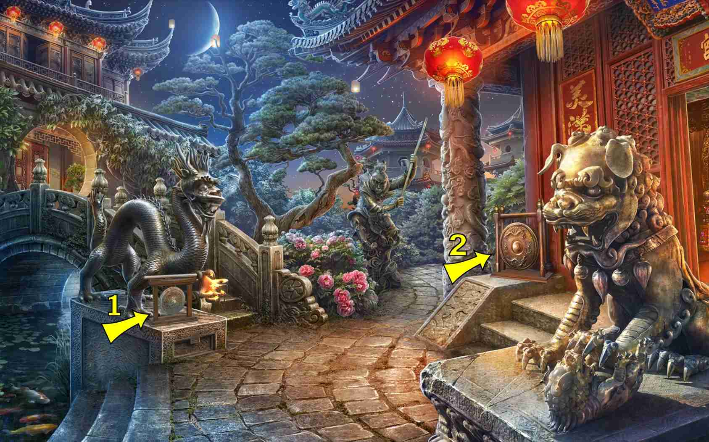
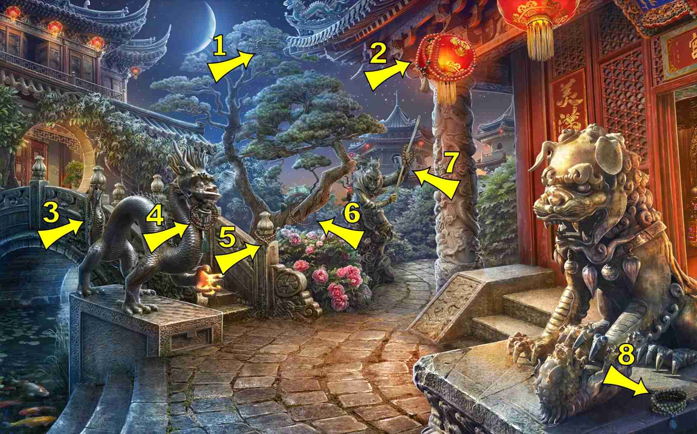
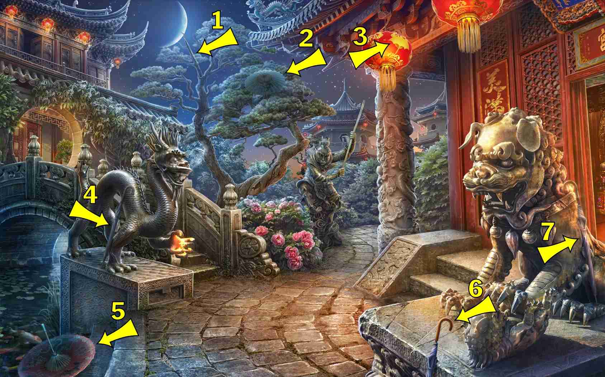

返回
Wiki
寺庙 Temple
B波浪
B贝壳
C彩旗
C船
C苍鹭
C长笛
D碟子
F佛像
F风筝
F风铃
G公鸡
G鼓
H花瓶
H蝴蝶
J卷轴
K筷子
L莲花
L锣
M帽子
M面具
N女孩雕像
N念珠
P派对爆竹
P葡萄
Q蜻蜓
Q钱包
R热气球
S书
S刷子
S扇子
S水壶
S沙漏
S石榴
S蛇
W乌龟
W五角星
X幸福结
X熊猫
X熏香炉
X鞋子
X香薰灯
Y摇铃
Y烟斗
Y硬币
Y羽毛
Y钥匙
Y阴阳图
Y雨伞
Y鸭子
Z珠宝盒
Z竹子
Z钻石
Z竹子 Bamboo
Y摇铃 Bell
S书 Book
F佛像 Buddha
C彩旗 Bunting Flags
H蝴蝶 Butterfly
X熏香炉 Censure
3 items:
Cauldron on three feet, also censer
In front of the dragon's pedestal
Behind the tree, on the left
To the right of the samurai
K筷子 Chopsticks
Y硬币 Coins
Z钻石 Diamond
Q蜻蜓 Dragonfly
3 items:
Left side rooftop angled
On claw of dog
G鼓 Drum
Y鸭子 Duck
Y羽毛 Feather
P派对爆竹 Firecrackers
C长笛 Flute
L锣 Gong

P葡萄 Grapes
S扇子 Hand Fan
M帽子 Hat
C苍鹭 Heron
R热气球 Hot Air Balloon
S沙漏 Hourglass
X香薰灯 Incense Lamp
Z珠宝盒 Jewelry Box
S水壶 Kettle
Y钥匙 Key
F风筝 Kite
X幸福结 Knot of Happiness
L莲花 Lotus
M面具 Mask
S刷子 Paintbrush
X熊猫 Panda
W五角星 Pentagram
Y烟斗 Pipe
D碟子 Plate
S石榴 Pomegranate
Q钱包 Purse
G公鸡 Rooster
N念珠 Rosary

J卷轴 Scroll
B贝壳 Shell
C船 Ship
X鞋子 Shoe
S蛇 Snake
N女孩雕像 Statue of a Girl
W乌龟 Turtle
Y雨伞 Umbrella

H花瓶 Vase
B波浪 Wave
2 items:
Row of continuous spirals
At base of dragon long like bunting flags
Top corner left building roof edge short two pieces
F风铃 Wind Chime
Y阴阳图 Yin Yang
4 items:
Under main building over hang, right side
Under bridge
Under first overhang on background pagoda
On ground near steps to water.